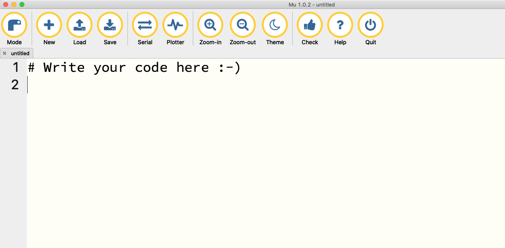
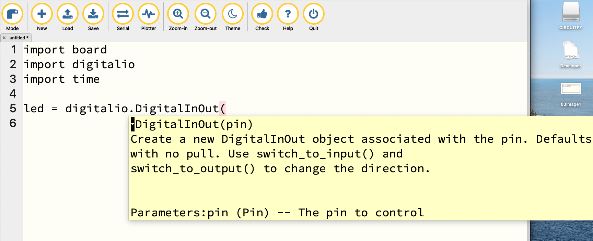

Chapter 3 Circuit Python
Now it’s time to start making your board do something.
If you’ve still got mu-editor running your test.py file, you can click the Stop button. Then click the X on the test.py tab and close it.
Now, plug your Circuit Playground into a USB port on your computer. If you’ve been following along, it should have a drive on your computer called CIRCUITPY. If not, here’s the instructions for installing Circuit Python.
An alert box should appear that says it detected your board.
In mu-editor, click Mode and select Adafruit CircuitPython.
Then click New. You should have a window that looks like this.

The first thing you’ll notice is that it says # Write your code here :-). That’s what’s called a comment. Comments start with a # and everything after it on that line will not be executed as code. So you can write whatever you want. You can also delete that line. Or keep it if you need the reminder. Either way, it’s not going to do very much.
The first thing we’re going to do to get started is we’re going to make a tiny light blink. It’s a good place to start because we’re going to learn:
- How to write code in mu-editor.
- How to save code in mu-editor.
- How to move that code onto your board.
- How to make a light blink.
And in that order. Making a light blink isn’t all that important, but the lessons learned doing it will be useful throughout.
This is the code we’re going to use. DON’T JUST COPY AND PASTE IT. I want you to see a feature of mu-editor and other code editors. It’s got many names, but it’s aware of what you’re typing and is going to try to make useful suggestions and offer up some simple documentation.
import board
import digitalio
import time
led = digitalio.DigitalInOut(board.D13)
led.direction = digitalio.Direction.OUTPUT
while True:
led.value = True
time.sleep(.5)
led.value = False
time.sleep(.5)As you type, you should see suggestions like this:

Let’s walk through the code step by step.
First, the imports:
In the previous chapter, we talked about external libraries that do common things. Here’s where you start to see how deep that hole can go. These libraries, in order, give you access to the pieces and parts on your board, handles digital input and output to and from your board and gives you some tools to handle time.
The best practice for your code is to do your imports first, at the top.
Now, we do some setup.
The first thing we’re going to do, is set up a variable called led. What led becomes is a Python thing called a Class. A Class is a generic description of a thing. In this case, the Class covers Digital Input and Output tools on your board. They’re called pins. In this case, led is going to control digital pin 13 – which we get from our board library. The D in front of the 13 means “digital”. So led is going to control the input and output coming from digital pin 13.
The second thing is we need to set the direction of that input and output. This is easy when you’re dealing with an led. It’s a light. It’s only output. So led.direction sets the direction of input or output to D13 to “OUTPUT”.
Now, to the actual parts that make the board do things:
This says while True – without saying what is true or how to falsify it, so it’s saying while the board is on – set the led value to True, or on. Then, pause a half a second. Then turn it off. And pause half a second. Rinse and repeat forever.
Save this file and call it code.py
It has to be called code.py for it to work. When you load it onto the board, it will be looking for code.py.
Now take that code.py file and drag it into the CIRCUITPY drive.
Is a little red light blinking?
Now we can play with it a little.
Change the values in time.sleep. Save the file. Drag it over to your board. What happens?
3.1 Making it easier
How we just accomplished that is what could be described as the long way around doing this. We went to the very specific pieces and interacted with them. This will be an important pattern to rely on later, when we get to more complicated problems.
But in this case, it can be easier.
Adafruit has a library specific to their board, which connects things much more directly. Instead of having to connect to digitalIO and set things and name the specific pin on the board, Adafruit has made it easier by just creating a thing called red_led.
import time
from adafruit_circuitplayground import cp
while True:
cp.red_led = True
time.sleep(0.5)
cp.red_led = False
time.sleep(0.5)So this imports a thing called cp, which … you can guess what that stands for … and pretty much uses the while code from before to turn the red_led on and off.
We can make it even easier with a little logic game.
import time
from adafruit_circuitplayground import cp
while True:
cp.red_led = not cp.red_led
time.sleep(0.5)But wait, how does this work? It works by exploiting what cp.red_led can be. It can either be True or it can be False. The not in this case says set cp.red_led to the other thing – if it’s True, make it False – then pause a half a second. Then, if it’s False, make it True, and pause. Repeat forever.
3.2 More fun with lights
Now that we’ve been introduced to Adafruit’s board library, we can start to play with more things. Note there’s much bigger lights than that tiny red led. Let’s play with those.
Those lights are called NeoPixels, or in the Adafruit library, pixels for short. And we can fill those with whatever color we want.
How about red?
Or green?
Or blue?
You can make them blink.
import time
from adafruit_circuitplayground import cp
while True:
cp.pixels.fill((0, 0, 255))
time.sleep(.5)
cp.pixels.fill((0, 0, 0))
time.sleep(.5)You can light up just one of them.
Now, to understand how this works, you need to understand something about Python. Python counts in a weird way to everyone except programmers. Python starts counting at 0. So cp.pixels[0] is saying go to the first pixel and turn it blue. The rest are off.
3.3 Stretch your head
Before you run this, what do you think it’s going to do?
import time
from adafruit_circuitplayground import cp
while True:
cp.pixels[0] = (255, 0, 255)
time.sleep(.1)
cp.pixels[1] = (255, 0, 255)
time.sleep(.1)
cp.pixels[2] = (255, 0, 255)
time.sleep(.1)
cp.pixels[3] = (255, 0, 255)
time.sleep(.1)
cp.pixels[4] = (255, 0, 255)
time.sleep(.1)
cp.pixels[5] = (255, 0, 255)
time.sleep(.1)
cp.pixels[6] = (255, 0, 255)
time.sleep(.1)
cp.pixels[7] = (255, 0, 255)
time.sleep(.1)
cp.pixels[8] = (255, 0, 255)
time.sleep(.1)
cp.pixels[9] = (255, 0, 255)
time.sleep(.1)
cp.pixels.fill((0, 0, 0))
time.sleep(.1)
cp.pixels.fill((255, 0, 255))
time.sleep(.1)
cp.pixels.fill((0, 0, 0))
time.sleep(.1)
cp.pixels.fill((255, 0, 255))
time.sleep(.1)
cp.pixels.fill((0, 0, 0))
time.sleep(.1)
cp.pixels.fill((255, 0, 255))
time.sleep(.1)
cp.pixels.fill((0, 0, 0))
time.sleep(.1)The RGB value of 255, 0, 255 is full red and full blue – Purple. So it turns on the first, turns on the second, turns on the third and so on until all of them are lit up, turns them all off and on three times and repeats. All I did to make this? Copy, paste, change a value and repeat.